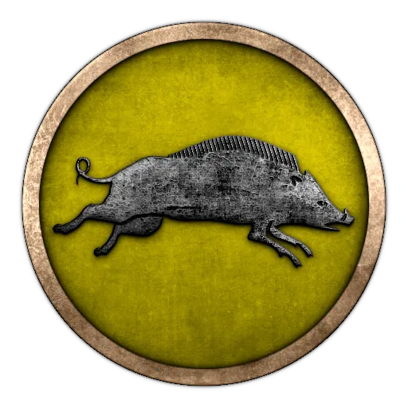
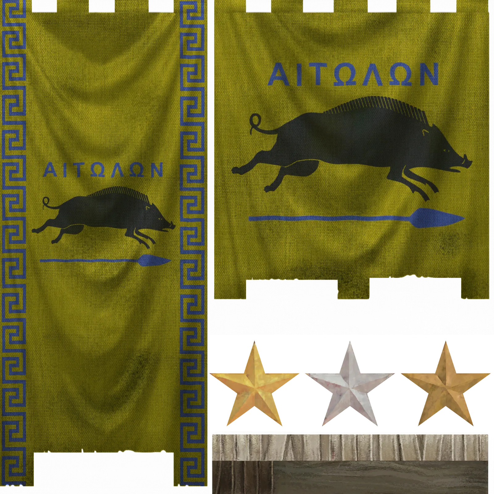
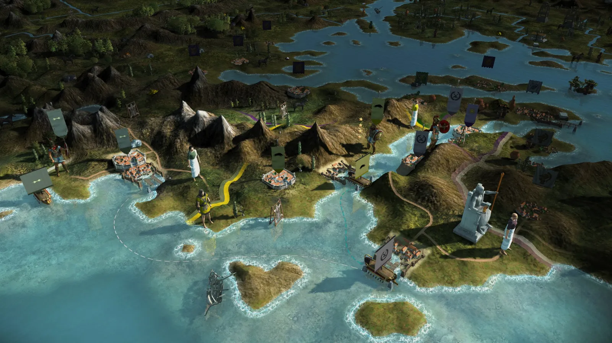
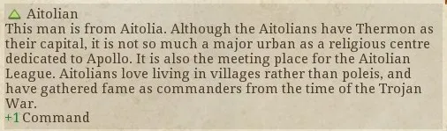

RTR: Imperium Surrectum
RTR: Imperium SurrectumThe Aetolian League
2022-02-19 · Rex Basiliscus

"In all recorded history, the Aitolians never became the subject of any other people, but throughout all time remained undevastated, both because of the ruggedness of their country and their training in warfare." – Ephoros of Kyme
Hey. Hey you. Yes you! Who do you think you are? Coming here into the Aitolian mountains like that, with your swagger attitude, your pretentious tone and your apple coloured chlamys, walking around like a royal king. You think you are clever, you think you are better, like that Mausolos who thought he was better than the Great King himself? Like that Mauritios who thought his wine was preferable to the drink of Dionysos himself? Don't howl, hand over your sword. Yes, like that, or I will kick your Polis butt all the way to Moskilito cuckoo land or how today’s kids call the end of the world.
Now, stand there, your highness, throw the fancy chlamys and your other clothes over there – do NOT move, you are out of luck. Now what, will you conjure up a daimon to save yourself, like some kind of Illyrian wizard? No, it's over, sit down and listen. You may be surprised, but we Aitolians actually speak, yes, we don't just shag sheep and kill foreigners. Which is not to say you will be spared from either...
Welcome to Aitolia, the home of the beauty contest winner of the 1st Olympiad himself, Apollo. Oh, come on, don't act surprised again, the damn healer god lives in Delphi, and Delphi is ours, everyone knows that. In the past, the other Hellenes thought we were primitive, rude and uncivilised ... and okay, right, they still think so. But that's utter nonsense, something the effeminate Athenians invented when they were spending too much time in front of their mirrors again. We are a strong, independent people.
I mean, did the GOAT, erm goat herd Alexandros not subdue all of Hellas but Aitolia? Did the Athenians and Lakedaimonians not best everyone in their long and famous war, everyone but the Aitolians? When those cocky Athenians in their shiny armour and scented chitones marched into our lands thinking they were bloody Dionysos in India, our brave men tore them to shreds with their slingshots.
At the time when the love-hungry Thebans reached for the hegemony over Greece – before crashing to the ground like Zeus every time Hera throws him out of the window for discovering another one of his dirty affairs – our forefathers decided that a Koinon would be a fine thing for Aitolia. Thus we banded together, like a band of brothers, or a band of bandits, or a band of big bosses bound to bash the Boiotians. We kicked some Macedonian asses, and the rest is history, as they say.
One day, I was just enjoying a magnificent piece of Saganaki and an incredible red wine I had taken off a Rhodian merchant, when the news arrived that a horde of uncouth Barbarians had arrived in good old Hellas land. I believe a guy called Ephoros said these Keltoi are a hospitable and altogether nice bunch of Northerners. However, grandpa Ephoros is a fool, because those Celts really suck. I think he just fell for their blonde hair and their big muscles, if you ask me. Anyway, they wanted to burn down Apollo's temple, take the Pythia back to Keltucky and steal all his treasures we Aitolians are guarding with Argus eyes. To cut a long story short: all the Hellenes came together to stop them, and though us Aitolians were doing great – I remember how I ran over to them, threw a javelin which went through five men at once, split the captain's head in two with a precise hit, and then struck down a dozen more in melee – our so called allies were a total damn failure, as was to be expected.
Those big Keltoi guys trashed them, and all seemed lost when BOOM! – and I swear I saw this with my own eyes – Phoibos Apollon appeared, and he is one fair divine boy. He took out his golden bow and shot the Barbarians down by the hundreds, and then we pursued them through the night, and Apollon asked his daddy to send a thunderstorm and a hailstorm to slaughter the remaining attackers – who were, at this point, just pathetic escapees.
Man, an Aitolian usually doesn't talk that much, give me your wine... Ahh that's better, where's this from? From Italy, you say? Mmh, it is really good, maybe I should get a boat and raid Italy... ANYWAY. You read all the long boring texts on how cultured the Athenians are, how self-loving the Syracusans are, how oh-so-innocent the Achaians are and how backward the Lakedaimonians are. Now I hope this one made up for it. We Aitolians aren't like the others, we are cool.
And now the time has come for all the world to learn about this. And since they don't want to come to Aitolia, Aitolia needs to come to the world. They will not see us coming. We move through the high grass, we strike in darkness. We are fast, we are strong, and we have no mercy. The time has come to claim our place in Hellas. The Boiotians, Thessalians and Achaians, its them we need to overcome. We may force them into our League, or just steal everything they got. Epeiros is our ally, and the ambitions of their young king will help us in the inevitable war against the Macedonians who so desperately try to be Athenians (it's pretty pathetic, if you ask me). Oh yes, we are coming for them. And one day, Pella will burn.
At last we will reveal ourselves to the world ... at last, we will have revenge!
Hear ye, hear ye! We are back in ancient Greece with this Dev Diary, presenting the cool kids on the block -- the Aitolian League! This region of Greece had until this time period been seen by the other Greeks as a backwater, a homeland of peoples half-Greek, if not barbarian ... But as the other states of the peninsula are embroiled in everlasting wars, the Aitolian boar will wreak havoc once more ...


We are the Aitolians. We don't fear no one and will carry war to the enemy. To the South, the pesky Achaians are an easy enough target, but greater riches await in Athens or Boiotia. For now, your relations to the latter are friendly, but this may change in the future - the same is true of the Epirotes to the West. Macedon wants to tighten its grip over Greece and you may choose to challenge them. You have defeated the Galatians, now it is time to go and take your prize.


This is it folks - only one faction left to be revealed! I hope you have enjoyed this Dev Diary and that you are prepared for the next couple of them, as we still have some things we want to show you before the upcoming release of the 0.4.0 patch!